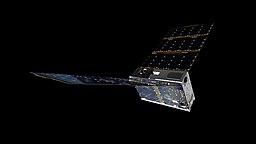

The Explorer
The first successful satellite launched by the United States,
Explorer 1 was launched on January 31, 1958.
Explorer 1 orbited Earth every 114.8 minutes, making 12.54 orbits per day.
It orbited as close as 220 miles and as far as 1,563 miles from Earth.
Explorer 1 stopped transmitting on May 23, 1958,
but remained in orbit until March 31, 1970, when it burned up in Earth's atmosphere.
